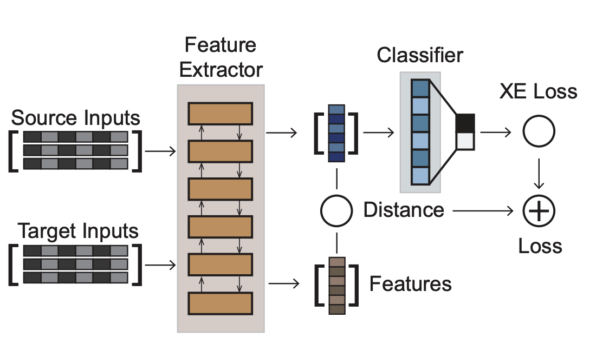
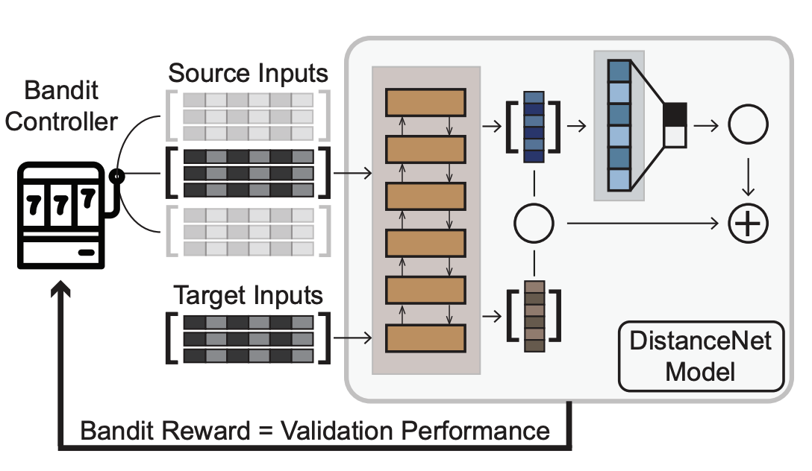
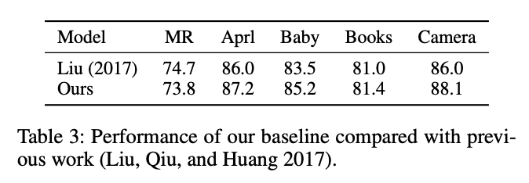
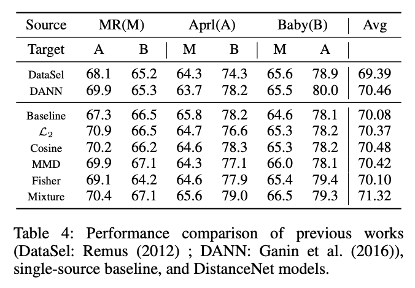
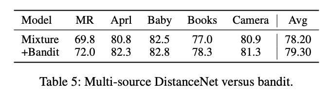

总结
论文提出学习算法在目标领域上的性能由两个因素决定:其在原始领域的误差和两个领域间数据分布的差异。
该论文首先讨论了几种距离度量方式，包括L2距离、Cosine距离、MMD(Maximum Mean Discrepancy)、FLD(Fisher Linear Discriminant)和CORAL(Correlation Alignment) 等,对区分样本来源的有效性及独特信息量,并实验验证。实验发现不存在某一种单独的度量可以完美区分不同领域，且L2距离、MMD与FLD度量标准在上述两个指标上表现较好。
基于该发现作者随后提出了一种结合了L2距离、MMD和FLD三种度量的DistanceNet模型。为了让模型适应在多个原领域来源的情况下的领域迁移，随后又提出了将multi-armed bandit 与UCB(upper confident bound)结合起来的DistanceNet-Bandit模型。
Baseline Model
LSTM Encoder + Cross Entropy Loss
DistanceNet Model(Single Source)

在基线模型的基础上添加组合距离损失，来优化Encoder对领域无关特征的编码能力。
DistanceNet-Bandit Model(Multi-Source)

类似强化学习的思路，添加赌博机控制器，通过reward优化控制器的策略选择，使得控制器能够在多个原领域数据下，选择一条较好的策略。
实验结果
Baseline Compare

Single Source

Multi-Source

扩展阅读
Adversarial multi-task learning for text classification. ACL 2017.
DataSel. ICDM 2012.
Domain-adversarial training of neural networks. JMLR 2016.